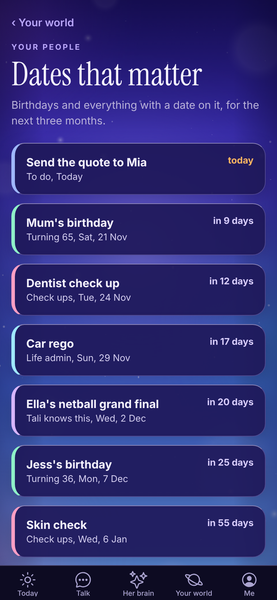

Tali HQ guide
Your people and dates
Keep family, friends, clients and leads in one place, with birthdays and catch ups, and see every date that matters for the next three months.
Your people holds everyone who matters to you: family, friends, and if you run a business, clients and leads. Add birthdays and Tali keeps them. Set a catch up or a follow-up and she nudges you when it's due. She reads this list before every chat and brief. Free
Open Your world, People, then tap Family, Friends, Clients or Leads.


The list#
- Tabs along the top: Family, Friends, Clients and Leads, with how many are in each. If you told Tali you don't run a business, the tabs are Family, Friends and Others, with no leads.
- People are sorted by next catch up or follow-up date, soonest first, then by name. One that's due today or overdue shows in orange.
- A birthday coming up shows on the person, with how old they're turning when Tali knows the year.
- With more than 6 people, a Search box appears. It searches names and notes.
- Dates that matter opens every birthday and date for the next three months. See below.
- Invoices opens your invoices (if you run a business). See Invoices.
Bring your people in#
When the list is empty, Tali offers three ways in.
- Tell me about them: opens Talk with a line ready. For example "Sam and Mia are clients, Jordan is a lead" or "Mum's birthday is 14 December."
- Paste a list: names and emails from a spreadsheet or your notes, one person per line, like "Sam Reilly, sam@example.com". Tap Add them.
- Add by hand: see below.
Anyone you invoice is saved here for you too.
Add someone#
- On a tab, tap Add family, Add a friend, Add a client or Add a lead.
- Check the kind at the top: Family, Friend, Client or Lead.
- Type their Name. This is the only thing you must fill in.
- For clients and leads, pick a Status. Clients: Active, Gone quiet, Paused or Past client. Leads: New, Talking, Won or Lost.
- Under Catch up (or Follow up for clients and leads), pick None, Today, Tomorrow, In 3 days, Next week, In 2 weeks or In a month.
- Add a Birthday (optional). Type "14 December" or "14/12/1961". No year needed.
- Add Email (optional), Phone (optional) and Notes: what they like, anything worth remembering.
- Tap Caught up today (or Contacted today) if you've just been in touch.
- Tap Save.
Or just tell Tali#
In Talk, say things like:
- "Mum's birthday is 14 December."
- "Dan is moving to Perth."
- "Add Ava Chen as a client, she trains early mornings."
- "Zack Donaldson is a new lead, follow up Thursday."
Tali adds or updates the person (she matches by name) and confirms in one line.
A person's page#
Tap anyone on the list to open their page.

- Their kind, status and birthday, with how old they're turning.
- Edit: change their details. Save brings you back to this page.
- What Tali knows Tali HQ: everything Tali has picked up about this person from your chats. Tap Forget this (then Sure?) to remove anything.
- Ask Tali Tali HQ: opens Talk with "What do I know about" and their name ready to send.
- Notes: your notes about them.
- Contact: Last contact and Next follow up. Tap Change to set a new date, or tap Contacted today, then Done.
On Free, What Tali knows shows "People memory is part of Tali HQ" with See plans.
Edit or delete#
Open the person, tap Edit, change anything and tap Save. To delete, tap Delete at the bottom, then Tap again to delete. Deleting can't be undone.
Dates that matter#
Open Your world, People, Dates that matter, or tap Dates that matter on Your people.

Every birthday and everything dated for the next three months, soonest first: birthdays from Your people, dated items from your lists (check ups, life admin, to do) and dates Tali knows from your chats. Anything in the next 7 days is in orange. Tap a row to open the person or the list it came from.
Tell Tali a date opens Talk with "Remember this date:" ready.
Catch ups and follow-ups#
When one is due, it shows under Due today on Today. Tick it off there, or open the person and set the next one. The People part of Your world also tells you when you haven't caught up with family or a friend in four weeks or more.
For clients, overdue follow-ups count against your business health. Tali HQ On Pro, two Rules can look after this for you: Spot quiet clients and Never miss a new lead. See Night school and Rules.
Before a meeting Tali HQ#
With a calendar connected, if one of today's events has a client's email on the invite or their name in the title, Today shows a meeting nudge with the top things Tali knows about them.
Questions#
Is Your people on the Free plan?
Yes. Your list, birthdays, catch ups, follow-ups and notes are on every plan. What Tali knows about each person and the Ask Tali button are part of Tali HQ.
I don't know what year they were born.
Leave the year off. "14 December" is fine. Tali works out how old they're turning only when she knows the year.
Tali didn't understand the birthday I typed.
Try "14 December" or "14/12/1961". She also reads "14th of June".
What's the difference between a client and a lead?
Clients are people you work with now. Leads are people you're talking to who haven't signed up yet. When a lead signs up, open them, tap Edit and switch them to Client.
Can I import a list?
Yes, when your list is empty: tap Paste a list and paste names and emails, one person per line. After that, tell Tali about a few at a time in Talk, or add them by hand.
I deleted someone by mistake.
Deleting can't be undone. Add them again, or tell Tali in Talk.